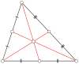

centroid
abstraction

Source: Wikipedia
Wikipedia Page (Something wrong with this association? Let us know.)
Wikidata Page (Something wrong with this association? Let us know.)
Occurs in:
- drainage-basin_centroid__elevation
- drainage-basin_centroid__latitude
- drainage-basin_centroid__longitude
- model_grid_cell_centroid__latitude
- model_grid_cell_centroid__longitude
- model_grid_cell_centroid__x_coordinate
- model_grid_cell_centroid__y_coordinate
- model_grid_cell_centroid_water__depth
- model_grid_cell_centroid__virtual_latitude
- model_grid_cell_centroid__virtual_longitude
- model_grid_cell_centroid_water__x_component_of_velocity
- model_grid_cell_centroid_water__y_component_of_velocity
- model_grid_cell_centroid_water__z_component_of_velocity
- model_grid_cell_centroid__z_coordinate
- model_grid_cell_face_centroid_water__depth
- model_grid_cell_face_centroid__latitude
- model_grid_cell_face_centroid__longitude
- model_grid_cell_face_centroid__virtual_latitude
- model_grid_cell_face_centroid__virtual_longitude
- model_grid_cell_face_centroid_water__x_component_of_velocity
- model_grid_cell_face_centroid__x_coordinate
- model_grid_cell_face_centroid_water__y_component_of_velocity
- model_grid_cell_face_centroid__y_coordinate
- model_grid_cell_face_centroid_water__z_component_of_velocity
- model_grid_cell_face_centroid__z_coordinate
- model_grid_dual-cell_centroid_water__depth
- model_grid_dual-cell_centroid__latitude
- model_grid_dual-cell_centroid__longitude
- model_grid_dual-cell_centroid__virtual_latitude
- model_grid_dual-cell_centroid__virtual_longitude
- model_grid_dual-cell_centroid_water__x_component_of_velocity
- model_grid_dual-cell_centroid__x_coordinate
- model_grid_dual-cell_centroid_water__y_component_of_velocity
- model_grid_dual-cell_centroid__y_coordinate
- model_grid_dual-cell_centroid_water__z_component_of_velocity
- model_grid_dual-cell_centroid__z_coordinate
- model_grid_dual-cell_face_centroid_water__depth
- model_grid_dual-cell_face_centroid__latitude
- model_grid_dual-cell_face_centroid__longitude
- model_grid_dual-cell_face_centroid__virtual_latitude
- model_grid_dual-cell_face_centroid__virtual_longitude
- model_grid_dual-cell_face_centroid_water__x_component_of_velocity
- model_grid_dual-cell_face_centroid__x_coordinate
- model_grid_dual-cell_face_centroid_water__y_component_of_velocity
- model_grid_dual-cell_face_centroid__y_coordinate
- model_grid_dual-cell_face_centroid_water__z_component_of_velocity
- model_grid_dual-cell_face_centroid__z_coordinate
- model_grid_primary-cell_centroid_water__depth
- model_grid_primary-cell_centroid__latitude
- model_grid_primary-cell_centroid__longitude
- model_grid_primary-cell_centroid__virtual_latitude
- model_grid_primary-cell_centroid__virtual_longitude
- model_grid_primary-cell_centroid_water__x_component_of_velocity
- model_grid_primary-cell_centroid__x_coordinate
- model_grid_primary-cell_centroid_water__y_component_of_velocity
- model_grid_primary-cell_centroid__y_coordinate
- model_grid_primary-cell_centroid_water__z_component_of_velocity
- model_grid_primary-cell_centroid__z_coordinate
- model_grid_primary-cell_face_centroid_water__depth
- model_grid_primary-cell_face_centroid__latitude
- model_grid_primary-cell_face_centroid__longitude
- model_grid_primary-cell_face_centroid__virtual_latitude
- model_grid_primary-cell_face_centroid__virtual_longitude
- model_grid_primary-cell_face_centroid_water__x_component_of_velocity
- model_grid_primary-cell_face_centroid__x_coordinate
- model_grid_primary-cell_face_centroid_water__y_component_of_velocity
- model_grid_primary-cell_face_centroid__y_coordinate
- model_grid_primary-cell_face_centroid_water__z_component_of_velocity
- model_grid_primary-cell_face_centroid__z_coordinate